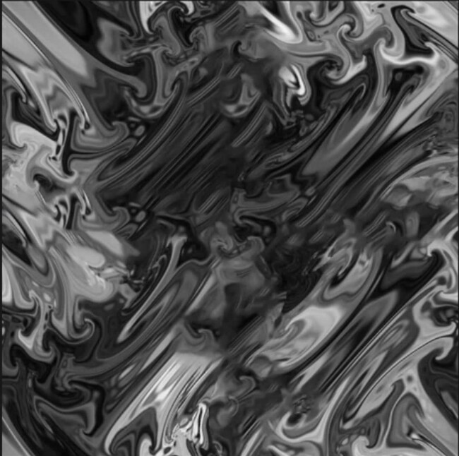

posts
Bubble Shader
基于 Gerstner Wave 的五彩泡泡实现

蓝图节点：

五彩材质效果
UE 材质设置
采用和玻璃一样的设置：
- Blend Mode：Translucent
- Lighting Mode：Surface Translucency Volume
怎么模拟泡泡？
产生彩虹效果的核心原理：薄膜干涉

由上图可知，彩色效果主要由以下两个因素决定：
-
自然光摄入角度——根据角度的不同来对以下进行贴图采样

-
薄膜厚度——采样特殊的噪声贴图：取泡泡显微摄影图片，转为灰色后得到

1. 自然光摄入角度

u = 1 - (0.5 N·L + 0.5);
float2 uv = append(u, 0.5);

2. 薄膜厚度

- metalic 设置成1：specular 设置成1的意思
- Roughness 设置成 0
- Opacity 使用 Fresnel 节点设置，边缘薄一点
波动效果
用两个 GerstnerWave 实现
GerstnerWave 的核心公式：float speed = Time * SquareRoot(9.8 * 2PI / WaveLength);
自定义 Gerstner Wave 节点
输入：
WorldPos← AbsoluteWorldPositionTime← TimeWaveDirection← 例如(1,0,0)或(0.7,0,0.7)波的方向WaveLength← 标量参数（如 200）波长WaveHeight← 标量参数（如 5）波的高度PeakSharpness← 标量参数（0~1，如 0.5）
输出
Offset（3）← 计算后该点的位移Normal（3）← 计算后该点的法线
// 1) 归一化波的传播方向（只使用 XY 平面）
float2 D = normalize(WaveDirection.xy);
// 2) 计算波数 k
// 波数公式：k = 2π / 波长
float k = 6.2831853 / max(WaveLength, 1e-4);
// 角频率 w，使用深水波色散关系：w = sqrt(g * k)
float w = sqrt(9.81 * k);
// 波幅（波浪高度）
float A = WaveHeight;
// 波峰尖锐度（控制水平位移强度）
// 限制在 [0,1] 范围，防止波浪自交
float Q = saturate(PeakSharpness);
// 3) 计算相位 Phase，表示波在空间 + 时间中的传播
// phase = k * (方向 · 位置) - w * t
// dot(D, WorldPos.xy) 表示沿波传播方向的距离
// - w * Time 表示随时间移动
float phase = k * dot(D, WorldPos.xy) - w * Time;
// 提前计算 sin 和 cos
float s = sin(phase);
float c = cos(phase);
// 4) 计算波的垂直位移
// Gerstner wave 的高度变化
float offsetZ = A * s;
// 5) 方向分量
float dX = D.x;
float dY = D.y;
// 6) 计算高度函数的偏导数
// 用于计算法线
float dZdx = A * k * c * dX;
float dZdy = A * k * c * dY;
// 7) 计算水平位移的 Jacobian
// Gerstner wave 不只是上下移动
// 还会产生水平位移
float dXdx = 1.0 - Q * A * k * s * dX * dX;
float dXdy = - Q * A * k * s * dX * dY;
float dYdx = - Q * A * k * s * dY * dX;
float dYdy = 1.0 - Q * A * k * s * dY * dY;
// 8) 构建切线向量
// 表示曲面在 X/Y 方向的变化
float3 Tx = float3(dXdx, dYdx, dZdx);
float3 Ty = float3(dXdy, dYdy, dZdy);
// 9) 通过叉乘计算法线
// normal = normalize(Tx × Ty)
float3 N = normalize(cross(Tx, Ty));
// 10) 输出结果
// 波浪高度偏移
out_offsetZ = offsetZ;
// 水面法线
out_normal = N;
return 0;